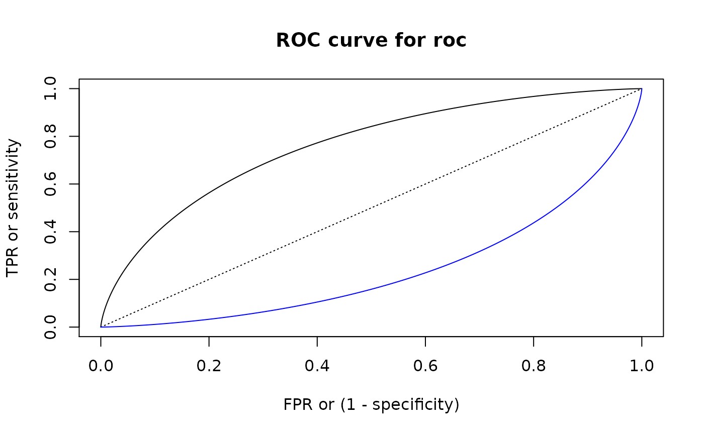
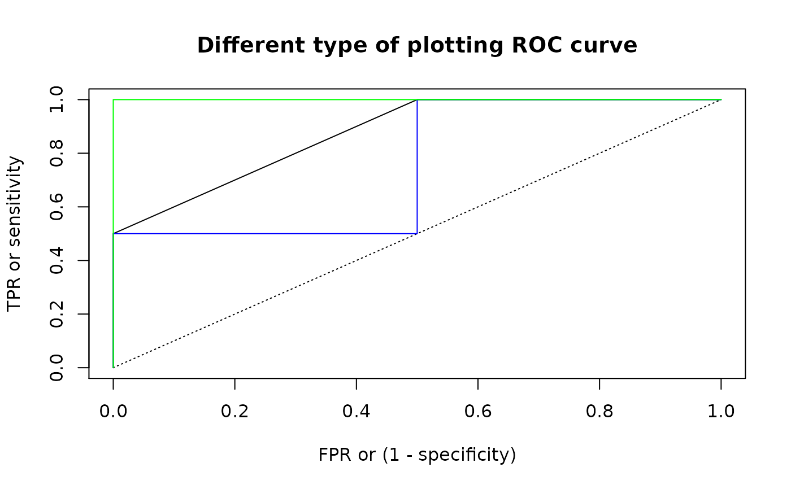

These functions help you perform a ROC ("Receiver Operating Characteristic")
analysis for one-dimensional linear classifier: values not more than some
threshold are classified as "negative", and more than threshold -
as "positive". Here input pair of pdqr-functions represent "true"
distributions of values with "negative" (f) and "positive" (g) labels.
summ_roc(f, g, n_grid = 1001)
summ_rocauc(f, g, method = "expected")
roc_plot(roc, ..., add_bisector = TRUE)
roc_lines(roc, ...)| f | A pdqr-function of any type and class. Represents "true" distribution of "negative" values. |
|---|---|
| g | A pdqr-function of any type and class. Represents "true" distribution of "positive" values. |
| n_grid | Number of points of ROC curve to be computed. |
| method | Method of computing ROC AUC. Should be one of "expected", "pessimistic", "optimistic" (see Details). |
| roc | A data frame representing ROC curve. Typically an output of
|
| ... | |
| add_bisector | If |
summ_roc() returns a data frame with n_grid rows and columns
"threshold" (grid of classification thresholds, ordered decreasingly), "fpr",
and "tpr" (corresponding false and true positive rates, ordered
non-decreasingly by "fpr").
summ_rocauc() returns single number representing area under the ROC curve.
roc_plot() and roc_lines() create plotting side effects.
ROC curve describes how well classifier performs under different thresholds. For all possible thresholds two classification metrics are computed which later form x and y coordinates of a curve:
False positive rate (FPR): proportion of "negative" distribution which was (incorrectly) classified as "positive". This is the same as one minus "specificity" (proportion of "negative" values classified as "negative").
True positive rate (TPR): proportion of "positive" distribution which was (correctly) classified as "positive". This is also called "sensitivity".
summ_roc() creates a uniform grid of decreasing n_grid values (so that
output points of ROC curve are ordered from left to right) covering range of
all meaningful thresholds. This range is computed as slightly extended range
of f and g supports (extension is needed to achieve extreme values of
"fpr" in presence of "discrete" type). Then FPR and TPR are computed for
every threshold.
summ_rocauc() computes a common general (without any particular threshold
in mind) diagnostic value of classifier, area under ROC curve ("ROC AUC"
or "AUROC"). Numerically it is equal to a probability of random variable with
distribution g being strictly greater than f plus possible correction
for functions being equal, with multiple ways to account for it. Method
"pessimistic" doesn't add correction, "expected" adds half of probability of
f and g being equal (which is default), "optimistic" adds full
probability. Note that this means that correction might be done only if
both input pdqr-functions have "discrete" type. See pdqr methods for "Ops" group generic family for more details on comparing
functions.
roc_plot() and roc_lines() perform plotting (with
plot()) and adding (with lines())
ROC curves respectively.
summ_separation() for computing optimal separation threshold.
Other summary functions: summ_center,
summ_classmetric,
summ_distance, summ_entropy,
summ_hdr, summ_interval,
summ_moment, summ_order,
summ_prob_true, summ_pval,
summ_quantile,
summ_separation, summ_spread
d_norm_1 <- as_d(dnorm)
d_norm_2 <- as_d(dnorm, mean = 1)
roc <- summ_roc(d_norm_1, d_norm_2)
head(roc)#> threshold fpr tpr
#> 1 5.753425 0 0.000000e+00
#> 2 5.742918 0 5.330559e-08
#> 3 5.732412 0 1.093400e-07
#> 4 5.721905 0 1.682311e-07
#> 5 5.711398 0 2.301175e-07
#> 6 5.700891 0 2.951445e-07
# `summ_rocauc()` is equivalent to probability of `g > f`
summ_rocauc(d_norm_1, d_norm_2)#> [1] 0.760251#> [1] 0.760251
# Plotting
roc_plot(roc)roc_lines(summ_roc(d_norm_2, d_norm_1), col = "blue")
# For "discrete" functions `summ_rocauc()` can produce different outputs
d_dis_1 <- new_d(1:2, "discrete")
d_dis_2 <- new_d(2:3, "discrete")
summ_rocauc(d_dis_1, d_dis_2)#> [1] 0.875summ_rocauc(d_dis_1, d_dis_2, method = "pessimistic")#> [1] 0.75summ_rocauc(d_dis_1, d_dis_2, method = "optimistic")#> [1] 1 # These methods correspond to different ways of plotting ROC curves
roc <- summ_roc(d_dis_1, d_dis_2)
# Default line plot for "expected" method
roc_plot(roc, main = "Different type of plotting ROC curve") # Method "pessimistic"
roc_lines(roc, type = "s", col = "blue") # Method "optimistic"
roc_lines(roc, type = "S", col = "green")